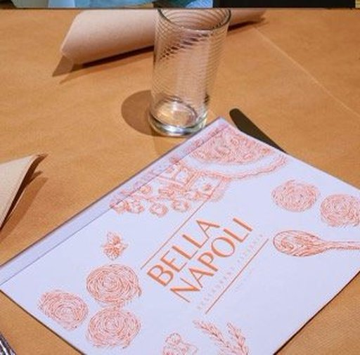

L'histoire
La plus ancienne pizzeria de Luxembourg
L'une des premières pizzerias du Luxembourg et aujourd'hui la plus ancienne, Bella Napoli est une affaire de famille depuis 1976. La famille Balestri prépare avec passion des pizzas cuites au feu de bois, des pâtes fraîches faites maison et des sauces artisanales fidèles aux recettes napolitaines.
Situé à deux pas de la Gare de Luxembourg, le restaurant offre une cuisine italienne authentique dans une atmosphère chaleureuse et accueillante — la même adresse depuis un demi-siècle.